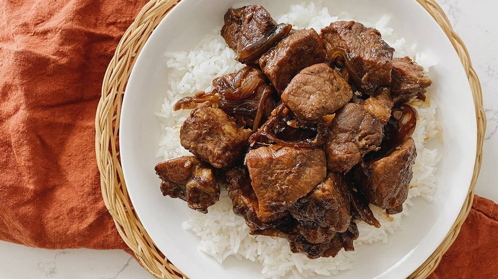

Adobo
Ingredients
- Country style boneless pork ribs (or boston butt)
- 4 oz vinegar
- 5 oz soysauce
- 10 cloves of fresh garlic (or 3-4 tbsp garlic powder)
- 1 tsp pepper
- water
Preparation
- Cut ribs into 1 inch chunks
- Mince the garlic
- Add to large pot and MIX:
- water (6 cups to start)
- vinegar
- soy sauce
- pepper
- garlic
- Add meat to pot and STIR
- Set heat to high and bring to boil. Once boiling, set the heat to medium high.
- Cook meat for 1 hour at a steady boil. Once meat is tender, let the water evaporate until
it covers half the meat, or until the desired taste is reached. (the less water, the stronger the taste)
Note: If liquid starts to reduce below the top of the meat, and the the meat is not tender, then add another half cup of water. Repeat this as many times as necessary.